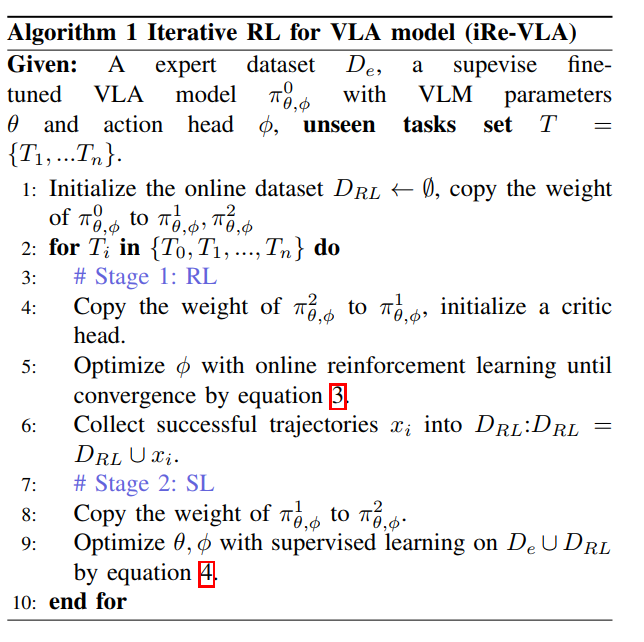

iRe-VLA
直接将 online RL 应用于大型 VLA 模型面临挑战，包括训练不稳定性、计算负担等。为了解决这些挑战，提出了 iRe-VLA 框架，该框架在强化学习和监督学习之间迭代，以有效改善 VLA 模型，利用 RL 的探索性优势，同时保持监督学习的稳定性。
具体来说，在 RL 阶段，冻结 VLM 参数，仅训练轻量动作头，以保持训练稳定性。在随后的监督学习阶段，在成功的轨迹上对整个模型进行微调，以充分利用大型模型的表达能力。
利用标准的深度强化学习 部分可观察马尔可夫决策过程 POMDP 框架，其中一个任务可以表示为 M=(S,A,PT,R,γ,O,PE)。
-
S 和 A 是任务的状态空间和动作空间，
-
O 是机器人观察到的信息，如视觉图像。
-
PT:S×A×S→[0,1] 是状态转移概率函数，
-
R:S×A×S→R 是任务的奖励函数。在机器人任务中，奖励信号通常是稀疏的，因此本文中考虑二元奖励，如果机器人成功完成任务 R=1，否则 R=0。
-
PE:S×O→[0,1] 是观察发射概率。
-
策略 πθ:O→A 定义了一个动作空间中的概率分布，由 θ 参数化。
-
参数 θ 的目标是最大化策略 πθ 的期望回报，折扣为 γ：
J(θ)=E(s0,o0,a0),(s1,o1,a1),...∼pθ[t∑γtR(st,at)]
Stage 0: Supervised Learning on Expert Dataset
在专家机器人数据集上对 VLA 模型进行监督微调，学习目标为 MSE
J0(θ,ϕ)=E(o,l,a)∼De[∣∣πθ,ϕ(o,l)−a∣∣22]
经过监督微调后，我们得到了初始 VLA 模型 πθ,ϕ0。其性能与专家数据集 De 的规模和质量高度相关。
Stage 1: Online RL with Frozen VLM
在 RL 过程中，引入一个与动作头结构相似的 critic head，但输出维度设置为 1。为了防止模型崩溃并加速学习过程，在此阶段冻结 VLM 参数 θ，只有动作头的参数 ϕ 被优化：
J1(ϕ)=E((s0,o0,a0),(s1,o1,a1),...)∼pϕ[t∑γtR(ot,at)]
经过在线 RL 之后，机器人可能会发现新的轨迹 xi 来解决新任务。 然后将这些成功轨迹收集到在线数据集中 DRL=DRL∪xi。
Stage 2: Supervised Learning on Both Expert and Online-collected Data
在阶段 1 中，当 agent 在新任务上 RL 时，它有可能忘记以前学习的任务。因此，在阶段 2 中，使用新收集的在线数据 DRL 和原始专家数据集 De 对整个模型进行监督，以减轻灾难性遗忘。
J2(θ,ϕ)=E(o,l,a)∼De∪DRL[∣∣πθ,ϕ(o,l)−a∣∣22]
在阶段 1, 2 之间不断迭代
